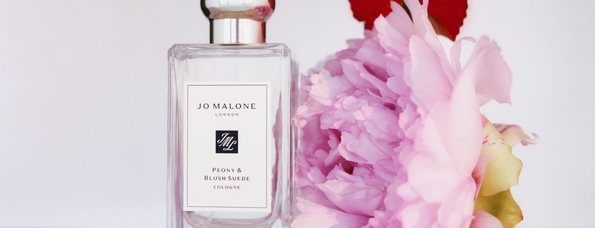
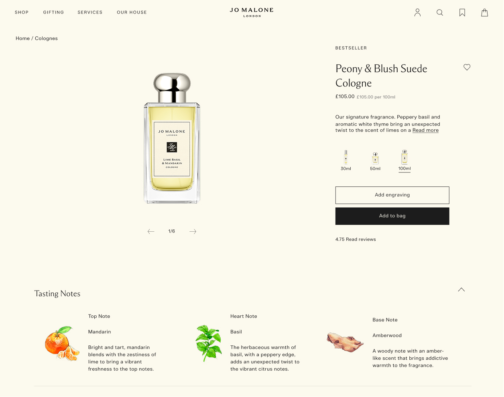
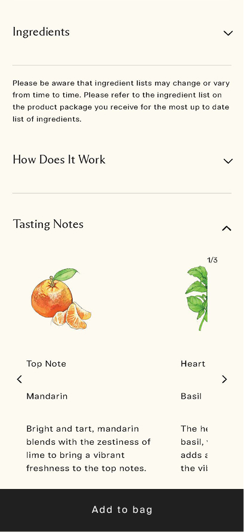
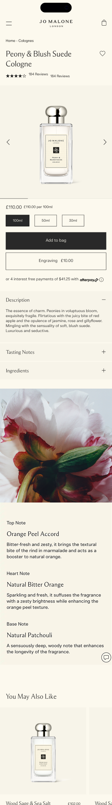
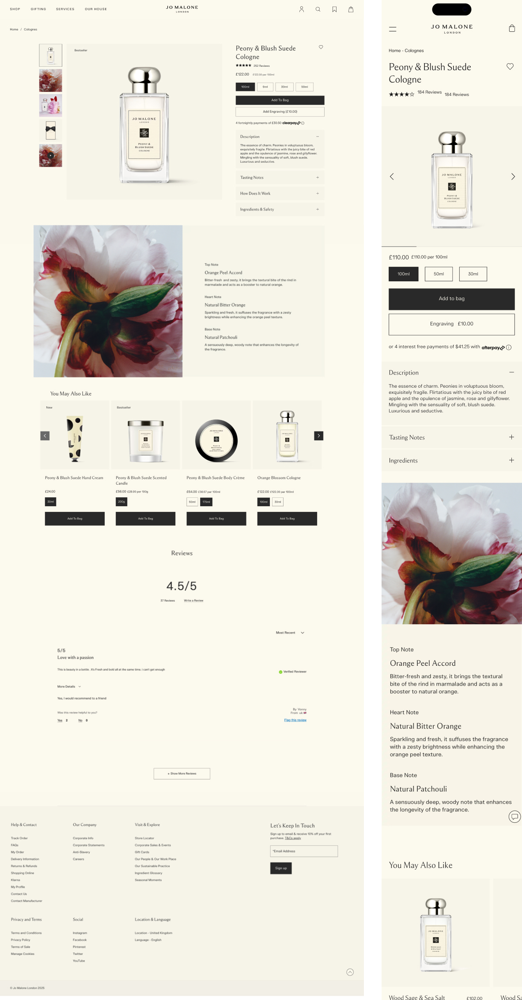
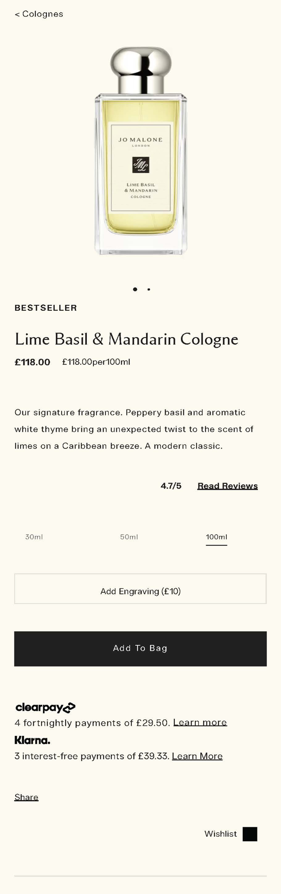
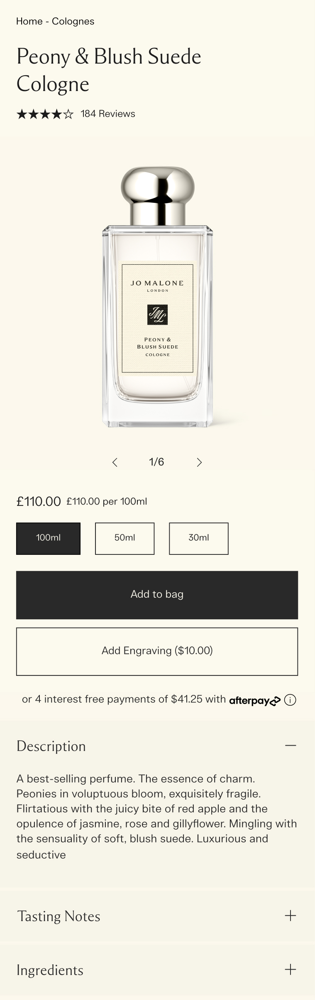
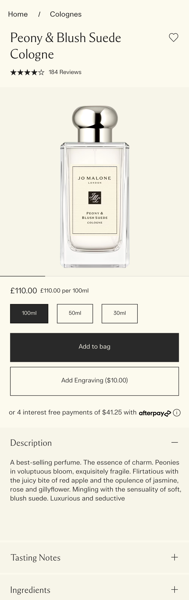

Overview
Analytics showed 38% of users dropped off before engaging with the product options, suggesting the page wasn't helping users understand the product quickly enough.
My Role
Senior Product Designer · PM · 2 Engineers
Tools
Figma · Wrike · Jira · Posthog · Thoughtspot
Key Result
Increase ATB rate from 12% → ELC benchmark of 18%
Discover
The discovery phase combined three research methodologies to build a complete picture of the PDP experience, from industry benchmarks to real user behaviour on the live site.
Method 01
UX Audit
Baymard Institute best practice audit across 87 heuristic criteria for luxury e-commerce PDPs.
Method 02
Usability Testing
Partnered with the LUX research team for moderated sessions across JML.
Method 03
Analytics
Identified key drop-off points, including ATB engagement, review interaction rates, image click-throughs.
Define
"Users struggle to evaluate products due to unclear hierarchy, lack of understanding of the scent, and low visibility of key decision drivers such as reviews, price and the ATB CTA. This reduces confidence and delays decision-making."
Add to Bag CTA too low on the page
Insight
42% of mobile users never reached 'Add to Bag', with the majority of taps above the fold · Heatmaps
Implication
Users were ready to purchase earlier but the CTA required additional scrolling.
Price lost within the hierarchy, discovered too late in the journey
Insight
37% of users interacted with size selectors before noticing the price · Analytics
Implication
Price transparency was delayed, increasing friction during decision-making.
Lack of lifestyle context and storytelling left users uncertain of scent
Insight
68% of users opened fragrance notes within 10 seconds, searching for scent context · Session recordings
Implication
The PDP failed to communicate the experiential aspect of the fragrance.
Research & Benchmarking
I benchmarked leading luxury and premium beauty brands to understand best-in-class PDP patterns, identifying conventions that build confidence and drive conversion without compromising brand equity.
Finding 01
Sticky CTAs
Charlotte Tilbury, NARS and Space NK all use persistent sticky Add to Bag bars, keeping the primary action visible throughout scroll.
Finding 02
Price proximity
Competitors surface price immediately below the product name, never buried below the fold or separated from the CTA.
Finding 03
Social proof
Brands like Diptyque and Aesop embed star ratings near the product title, establishing trust before users reach the purchase decision.
Finding 04
Lifestyle imagery
Top performers use rich editorial imagery and scent descriptors above the fold to evoke the product experience and reduce purchase uncertainty.
Ideation
A key insight from research was that users felt uncertain about scent without being able to smell it in person. Surfacing richer imagery and video content earlier in the page, making it easier to browse, and became a primary design focus. These mocks explore different carousel formats to bring storytelling content forward and build confidence before the purchase decision.
Image carousel layout explorations
Grid format
A mosaic grid surfaces multiple lifestyle images simultaneously, giving users a richer, more immediate visual overview of the product before scrolling.
Static container with vertical scroll
A fixed-height container with internal scroll keeps imagery contained within the page structure while allowing deeper exploration without disrupting the layout.
Visible thumbnails
Thumbnail navigation alongside the primary image gives users direct control, making the full image set visible at a glance and reducing uncertainty about what's available.
Test
Rather than shipping assumptions, key design decisions were validated through controlled A/B experiments. Each test had a clear hypothesis, defined variants, primary and secondary metrics, and a pre-agreed minimum detectable effect.
Context
Thumbnail size chips existed on desktop only. Removed to unify UX and reclaim space.
Result
No significant impact to ATB conversions. Image size chips can safely be removed without harming conversion, simplifying the UI.

Context
Price was being discovered too late in the journey.
Result
Including price in the sticky ATB does not have any beneficial impact and actually decreased interaction. The insight informed a refined hierarchy approach, surfacing price higher on the page rather than in the CTA.

Design

Alt image content surfaced
Thumbnails on desktop, arrows and progress bar on mobile → +12% desktop, +8% mobile image engagement.
Reviews surfaced higher with stars
Increases social proof → +15% review interaction.
Size chip image thumbnails removed
Reduces height of the stack.
Bookmark → heart icon, repositioned
Moved to right of product title → +3% uplift in clicks (requires login).
Accordions introduced
Description, tasting notes and ingredients now in accordions → increases scanability.
Impact
+12%
ATB rate
Moving from 12% baseline to 24% and surpassing the 18% ELC benchmark.
−7%
PDP bounce rate
Showing users finding what they need faster.
+15%
Review engagement
Including clicks on reviews and scroll on review section.
+15%
Image interaction

Phased rollout
Rather than launching all changes at once, improvements were released in two phased cycles, allowing time to measure impact, gather signal and iterate before the next wave of changes.
Phase 01
Hierarchy & visibility
Focused on surfacing key decision drivers — reviews, price, and the ATB CTA — earlier and more prominently. CTA order revised, Afterpay condensed, share functionality removed.
Phase 02
Storytelling & content
Introduced alt image thumbnails, coloured product background, visual ingredients module and accordion-based content — elevating the emotional and informational quality of the page.

Beginning
Phase 01
Phase 02Reflection
Test before shipping
Both A/B tests delivered null or negative results — validating the hypothesis-driven approach and preventing two potentially harmful launches.
Luxury context changes everything
Standard e-commerce best practices don't always translate to luxury. Price prominence can undermine brand equity rather than improving conversion.
Research source diversity matters
Combining Baymard, LUX usability testing and analytics produced a richer, more defensible problem set than any single source could alone.